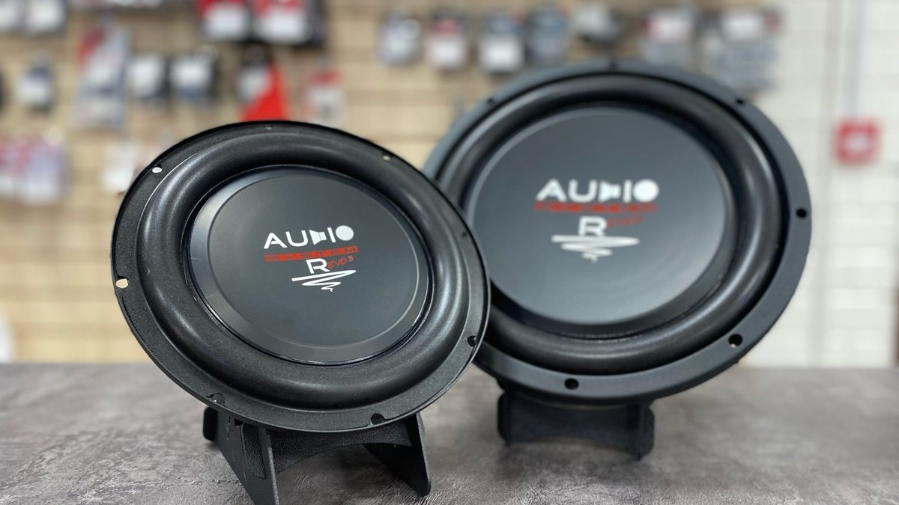

Вечер, вы листаете маркетплейс, а в машине во дворе стоят штатные динамики, которые хрипят на половине громкости. На экране двадцать вариантов. На коробках крупно: сотни ватт, «Hi-Fi», «мощный бас», где-то нарисован огонь. Цены разные в несколько раз, а описания одинаковые. Вы выбираете ту, где цифра больше, и через неделю понимаете, что звучит так же. Только теперь ещё и не влезает в дверь.
Динамики в машину – одна из самых частых покупок в автозвуке и одна из самых частых ошибок. Разберём, на что смотреть на самом деле.

Сначала – что влезет
Размер выбирают не по вкусу, а по машине. У каждой модели свои штатные места: где-то 13 сантиметров, где-то 16 или 16,5, а в некоторых машинах сзади стоят овальные динамики. Это первое, что нужно узнать про свою машину.
Второе – глубина. За динамиком в двери опускается стекло, и если магнит слишком глубокий, стекло в него упрётся. Третье – крепление: штатные посадочные места часто не совпадают с универсальными динамиками, и нужны проставочные кольца. Без них динамик либо не встанет, либо будет болтаться и дребезжать.
Если не уверены, лучше спросить до покупки, а не после. Вернуть коробку проще, чем переделывать дверь.
Коаксиальные или компонентные
Коаксиальный динамик – это всё в одном: на одной оси стоят низкочастотный динамик и маленький пищик для высоких. Ставится просто, в штатное место, как обычная замена.
Компонентная акустика – раздельная. Низкочастотный динамик идёт в дверь, отдельный твитер ставится выше, обычно в зеркальный треугольник или на стойку, а между ними работает разделительный фильтр. Звук от такого комплекта собирается выше, ближе к уровню ушей, и сцена получается понятнее. Но и установка сложнее: твитер нужно правильно расположить, провести провода, иногда переделать штатные накладки.
Для спокойной замены штатных динамиков часто хватает хорошей коаксиальной пары. Если вы планируете систему с усилителем и настройкой, логичнее сразу смотреть на компоненты.

Что на коробке не главное
Самая громкая цифра на упаковке – обычно пиковая или максимальная мощность. Она мало что говорит о том, как динамик будет звучать каждый день. Смотрите на номинальную мощность, её часто пишут как RMS. Она скромнее, но честнее.
Если динамики будут работать от штатной магнитолы без усилителя, важнее мощности чувствительность. Чем она выше, тем громче динамик играет от той же небольшой мощности. Мощный по паспорту, но малочувствительный динамик от штатной магнитолы может звучать тише и вялее старого.
А надписи вроде «Hi-Fi» и «мощный бас» на коробке – просто надписи. Они не регламентированы и ничего не обещают.
Без двери динамик не раскроется
Даже удачно подобранный динамик в неподготовленной двери звучит хуже, чем мог бы. Дверь – его корпус, и если металл дребезжит, а звук уходит в технологические отверстия, бас пропадает. Поэтому при замене акустики дверь обычно прорабатывают: это часть установки, а не отдельная прихоть.
Что сделать перед покупкой
Узнайте размер и глубину штатных мест вашей модели. Решите, будет ли усилитель – сейчас или позже. И главное, послушайте несколько вариантов вживую: два динамика с одинаковыми цифрами могут звучать совсем по-разному, и только ваши уши скажут, какой вам нравится.
Мы в Ярославле – студия «Автостиль», проспект Октября, 82б. Компоненты можно послушать на специальном стенде в студии, а мастера подскажут, какие динамики подойдут именно в вашу машину. Подробнее – на странице про автозвук. Телефон: +7 902 220-75-55.